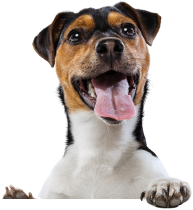

Conheça os benefícios da castração para cães e gatos.
Conheça os benefícios da castração para cães e gatos.
A castração é a forma mais responsável de controlar a população de cães e gatos, principalmente dos abandonados, reduzindo seu sofrimento nas ruas. É um procedimento cirúrgico simples, rápido, indolor e com recuperação rápida. Os animais podem ser liberados no mesmo dia e os cuidados pós-operatórios são simples.
Durante o lançamento, o prefeito também pontuou o trabalho realizado pela gestão municipal. “Estamos entregando para o povo de Uberlândia mais um projeto em prol da proteção animal de nossa cidade. Há muito trabalho pela frente”.
Além do Castramóvel, as esterilizações acontecem em toda cidade. O município já castrou quase 1.800 cães e gatos, desde a assinatura da ordem de serviço – em 22 de agosto deste ano – que firma parceria com a mesma Ong e com a Clínica Veterinária Pet House para a realização do procedimento em animais resgatados pelas instituições e protetores.
Outros 1.250 animais também já foram castrados, desde o começo do ano até o momento, por meio do convênio entre Prefeitura e Hospital Veterinário da UFU.
O equipamento trata-se de um caminhão VUC (conhecido popularmente como 3/4), com dois eixos, devidamente equipado para que médicos veterinários e auxiliares realizem, dentro das normas vigentes e com segurança, castrações e microchipagem gratuitas em cães e gatos previamente cadastrados.
O formulário on-line, que está no Portal da Prefeitura, foi criado com auxílio da Empresa Municipal de Processamento de Dados (Prodaub), para facilitar e ampliar o alcance dos cadastros.
A inscrição virtual pode ser realizada clicando AQUI.